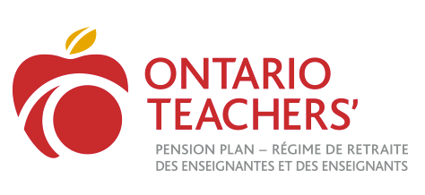

Zili Xie | 子立 谢
MS. Computer Science
Tandon School of Eng.
New York University
Email: zx979(at)nyu.edu
About
Hi, I am a second year master’s student in Computer Science at New York University. Before joining NYU, I received my bachelor’s degree in Computer Science (specialist program) and Statistic (minor) at University of Toronto st. George campus with distinction. My main focusing (interested) areas now are Machine learning, Computer Vision and Computer Graphics.
Education
2019.09~2021.05: Master's degree in Computer Science.
at New York Univeristy (NYU)
2014.09~2019.05: Bachelor's degree in Computer Science.
at University of Toronto, st. George (UTSG)

Photos
Photos
Photos
Photos
Photos
Photos
Photos
Photos
Interns
2020.05~Present: 4D Shoetech (时谛智能)
2017.05~2018.04: Ontario Teachers' Pension Plan (OTPP)
2016.05~2016.08: Teradata

Project
VisML-Colorization
An implementation & visualization of image colorization deep learning model using d3js.
See on GithubProject
Material Scan: svbrdf
An implementation & visualization of a Unet image colorization deep learning model using CNN.
To ProjectProject
3D Scene Editor+
OpenGL + Eigen + SOIL.
Add/remove/move/scale/rotate objects.
Supports texture/height/normal maps.
Supports percedural texture using Perlin noise.
Homework
3D Scene Editor
OpenGL + Eigen.
Add/remove/move/scale/rotate objects.
Blinn-Phong shading.
Capture screen and produce svg.